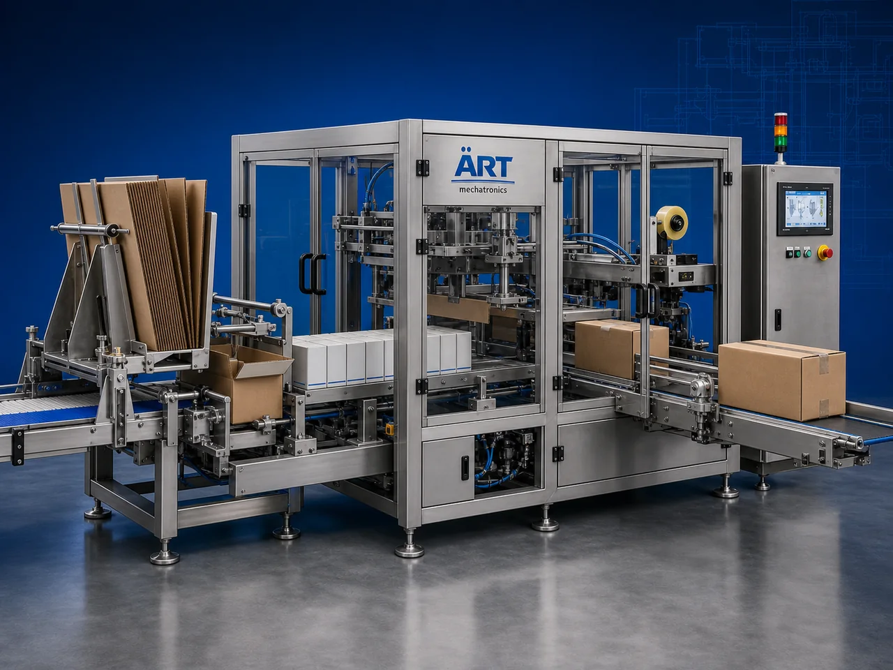

Master Carton Packing Machine (Automatic Master Carton Case Packing System)
A Master Carton Packing Machine, also known as a Master Carton Packaging Machine, Corrugated Box Packing Machine, Case Packing Machine, or Secondary Case Packing System, is an advanced industrial packaging solution designed for automatic product grouping, corrugated carton feeding, carton filling, case loading, sealing, coding, and high-speed secondary packaging operations for mono cartons, pouches, sachets, bottles, boxes, FMCG products, and retail packaging applications.

About the Master Carton Packing
Master carton packing systems are widely used for:
- Corrugated carton packing
- Secondary packaging operations
- Shipping carton packaging
- FMCG case packing
- Retail product bulk packing
- Export shipment packaging
- Warehouse packaging operations
- End-of-line packaging automation
The machine improves:
- Packaging speed
- Product handling accuracy
- Shipping protection
- Packaging consistency
- Labor productivity
- Production efficiency
- Dispatch management
Industrial master carton packing machines use:
- Servo synchronized conveyor systems
- Automatic case feeding systems
- PLC and HMI automation controls
- Precision carton loading mechanisms
- Automatic sealing and coding systems
to automatically group and load products into corrugated master cartons with superior packaging quality and high production efficiency.
Master carton packing machines are widely used in industries such as:
FMCG industries Food processing industries Pan masala industries Tobacco industries Pharmaceutical industries Beverage industries Cosmetic industries Consumer goods industries
where high-speed secondary packaging and export-ready case packing are essential.
The machine is highly suitable for:
- Mono carton case packing
- Pouch master carton packing
- Sachet bulk packing
- Bottle case packing
- FMCG secondary packaging
- Export shipment packaging
ART Mechatronics offers high-performance master carton packing machines, engineered for continuous industrial operation, accurate product handling, premium packaging quality, and reliable long-term packaging automation.
Working Principle of Master Carton Packing Machine
- 1. Product Feeding Products are fed continuously through synchronized conveyor systems.
- 2. Product Grouping & Collating Process Machine automatically counts, arranges, and groups products into predefined quantities for case packing operations.
Servo synchronization ensures accurate product positioning and smooth handling.
- 3. Master Carton Feeding & Erection Corrugated master cartons are automatically picked, erected, and positioned for filling operations.
- 4. Product Loading & Case Packing Operation Machine handles: ✔ Mono cartons ✔ Pouches ✔ Sachets ✔ Bottles ✔ Boxes ✔ FMCG products ✔ Retail products
accurately and continuously.
- 5. Carton Sealing & Coding Process Machine performs: Flap folding Tape sealing Glue sealing Barcode printing Batch coding
for secure shipping and export packaging quality.
- 6. Finished Carton Discharge Finished master cartons discharged automatically for: Palletizing Warehouse handling Dispatch operations Export shipment loading
Types of Master Carton Packing Machines
- 1. Automatic Case Packing Machine Designed for: ✔ High-speed industrial secondary packaging applications
- 2. Corrugated Box Packing Machine Suitable for: ✔ Shipping carton and warehouse packaging systems
- 3. Bottle Case Packing Machine Uses: ✔ Beverage and liquid product case loading systems
- 4. Pouch Master Carton Packing Machine Designed for: ✔ Pouch and sachet bulk packaging systems
- 5. Servo Driven Master Carton Packing Machine Suitable for: ✔ Precision high-speed case packing operations
- 6. Fully Automatic Master Carton Packaging System Designed for: ✔ Complete industrial end-of-line packaging automation lines
Industries Using Master Carton Packing Machines
🛒 FMCG Industry Consumer product secondary packaging and bulk case packing systems. 🍃 Food Processing Industry Snack pouches, food cartons, and retail packaging case loading systems. 🥤 Beverage Industry Bottle, can, and beverage carton case packing systems. 💊 Pharmaceutical Industry Medicine cartons and healthcare product case packing systems. 🚬 Tobacco Industry Cigarette cartons, shisha tobacco packs, and oral nicotine product case packing systems. 🧴 Cosmetic Industry Cosmetic product and personal care retail packaging case loading systems.
Features & Advantages
- High-speed automatic master carton packing operation
- Accurate product grouping and case loading systems
- Strong and secure shipping carton packaging
- PLC and servo automation control systems
- Improves dispatch efficiency and warehouse handling
- Reduces labor dependency and manual handling
- Supports multiple carton sizes and product formats
- Reliable long-term industrial performance
- Smooth and continuous end-of-line packaging operation
Technical Highlights
Machine Type: Automatic master carton packing machine Corrugated case packing machine Industrial case loading system Packaging Material: Corrugated cartons Shipping boxes Master cartons Case packaging materials Handling Integration: Automatic conveyor systems Servo product handling systems Case loading systems Features: PLC control system Servo synchronization Touchscreen HMI Batch coding integration Barcode printing system Sealing Type: Tape seal Glue seal Flap locking system Automation: Semi-automatic Fully automatic industrial systems
Turnkey Master Carton Packing Solutions
ART Mechatronics offers: Complete master carton packing systems Automatic case packing solutions Packaging automation integration systems Conveyor synchronization systems Installation & commissioning After-sales service & AMC
Why Choose Art Mechatronics
Expertise in industrial packaging and automation systems Customized master carton packing solutions for multiple industries High-performance and durable packaging technology Advanced PLC and servo automation systems Proven industrial packaging performance across sectors
Applications
FMCG Packaging Facilities Food Processing Industries Beverage Manufacturing Plants Pharmaceutical Packaging Units Tobacco Packaging Industries Cosmetic Manufacturing Facilities
Get pricing & specs for the Master Carton Packing
Share the product, target capacity, current process and plant location. These details help our engineers discuss the right machine or line configuration.
One partner, from design to start-up
ART Mechatronics designs, manufactures, installs and commissions your Master Carton Packing solution with regional presence in India, UAE and Thailand.